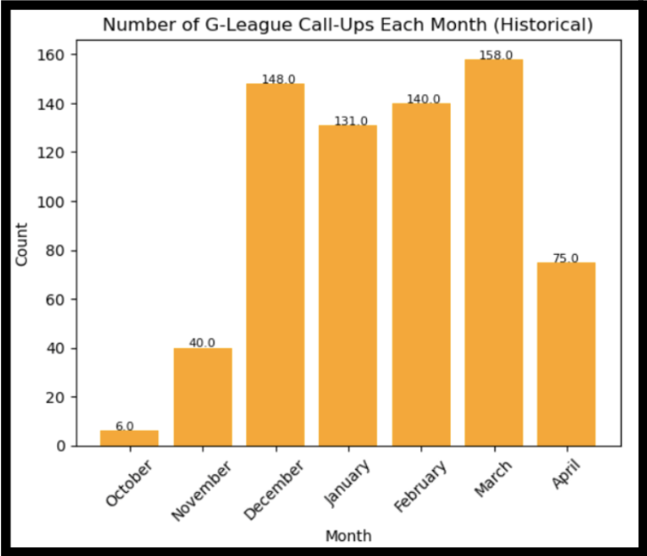
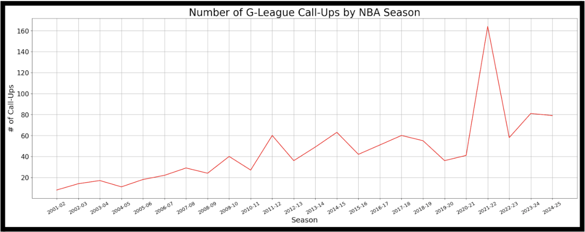
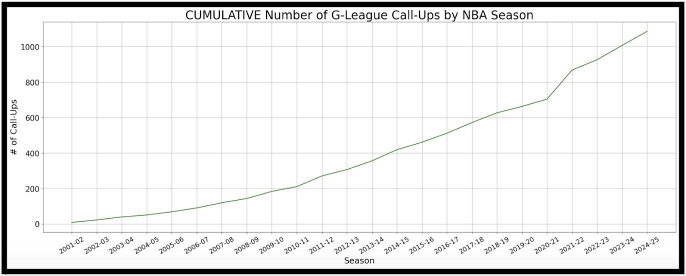
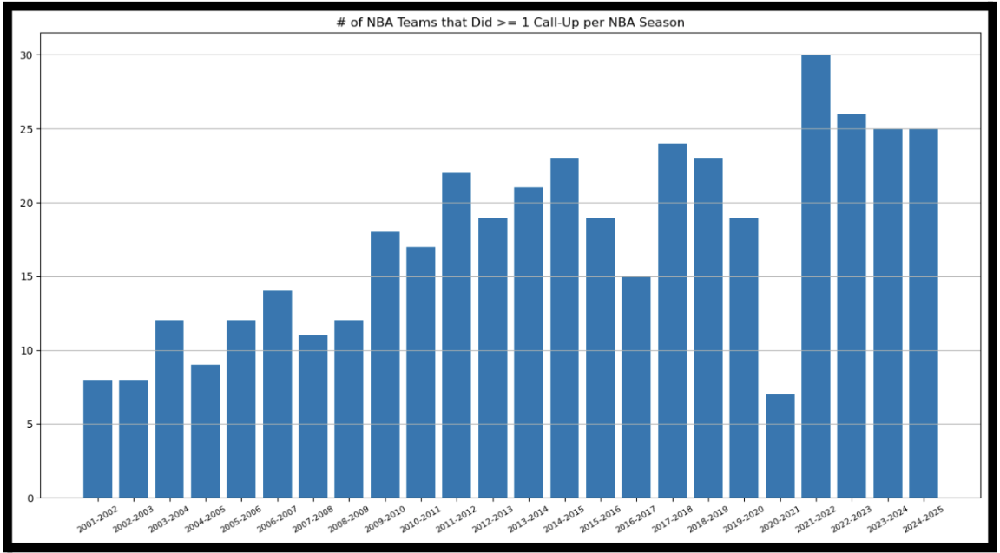
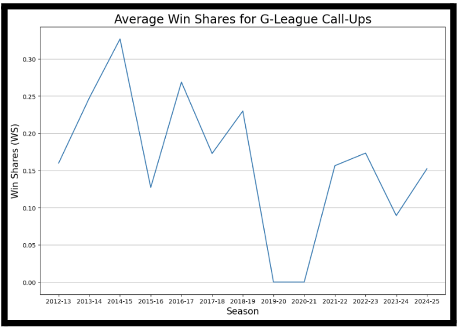
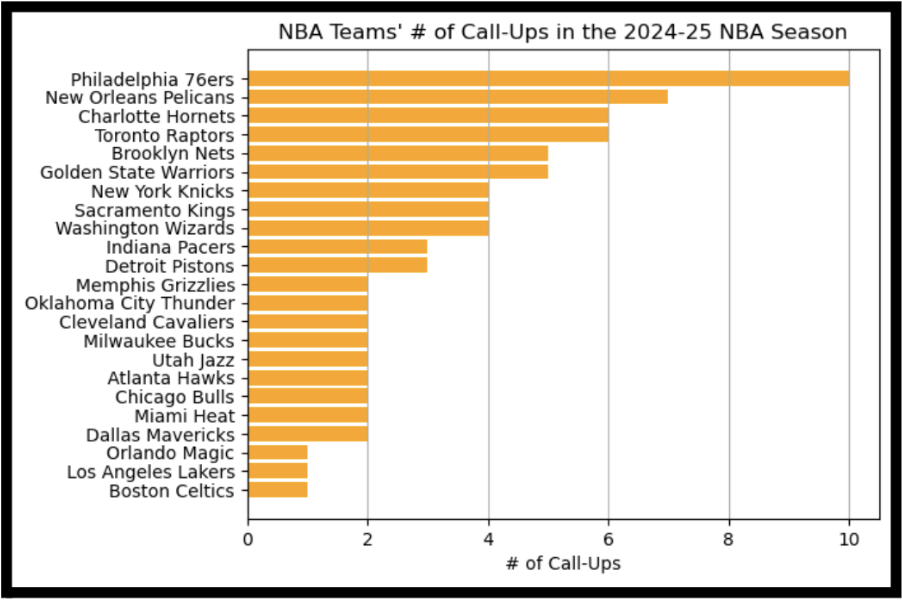
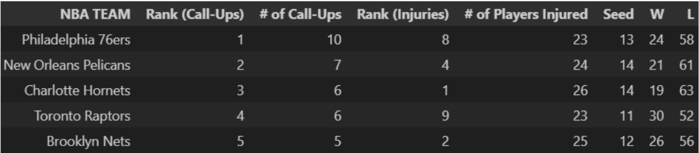
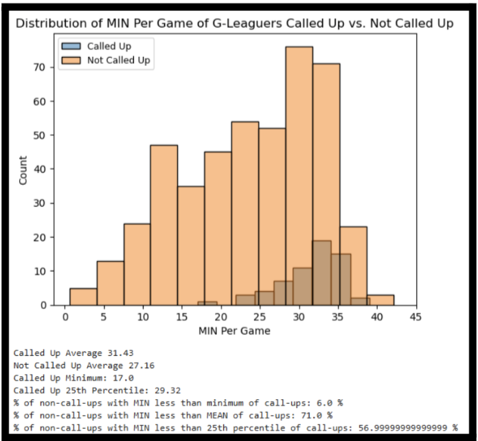

G-League Call-Ups: A Way to Find Hidden Gems?
By Colin Rondon | January 09, 2026
As teams nowadays look to shake up their rosters much more than back in the days, one of their sources for finding players to add is the G-League, the NBA’s developmental league. Used to develop young players, give practice runs to their recently rehabbed veterans, or just scout for good young players, the G-League is more than just the lesser-known middle child of basketball leagues. Just like the NBA draft, it has produced hidden gems like 4x DPOY Rudy Gobert plus 2019 champs and all-stars Pascal Siakam and Fred VanVleet. One of its former teams, the G-League Ignite, even served as a way for high school prospects to forego college and develop straight towards the NBA draft, producing young ballers like Jalen Green, Scoot Henderson, and Jonathan Kuminga. Hence, it might be worth giving it more attention than it currently gets. NBA teams have been adding “G-League Call-Ups” to their team since the 2001-02 NBA season, yet this term is not very well-known, so what is this all about?
Context
For those who are not familiar with what G-League “call-ups” are, think of an NBA team calling a G-League player to go up to the big leagues. At any point during the regular season, players in the G-League are eligible to sign a contract with an NBA team, whether temporary or for the rest of the season. This is because G-League players signed contracts with the league, not their individual team.
There are 3 types of contracts that G-League call-ups sign: the “Standard” contract, which lets the player play for an NBA team for the rest of the season, the “10-Day” contract, which usually serves as a trial period for the player to prove they belong on the roster, and the “Two-Way” contract, where the player splits their time during the season between a G-League team and its parent NBA team (for a maximum of 50 games). Normally, a G-League player can be signed by any NBA team, but if they are on a two-way contract, they can only play for the NBA team that is the parent of the G-League team they play for
Since a call-up is considered a roster change, just like a free agency signing or trade, call-ups can only be done during the regular season of the NBA, which you’ll see in the next section.
Historical Trends with G-League Call-Ups
The bar chart below describes how many G-League call-ups happened during each month of the NBA season.
As you can see, most teams don’t need to make call-ups until later in the season, with most happening in December and March. The most number of call-ups happens in March usually because rebuilding teams usually don’t care about their record by this time in the season, so they might want their young prospects to get more reps against NBA competition without caring about wins. Playoff contending teams who have secured a playoff spot by this time, a.k.a. top seeds might also want to give their star players more rest at the end of the season, so they MAY call up G-League players to take some or all playing time off the shoulders of these stars, or to even develop their own young prospects they might have.
Now, the two graphs below show the number of G-League call-ups since the 2001-02 NBA season when these were first implemented, with the first showing the number per season, and the second showing a cumulative sum since the start of call-ups.
 We can see that since the G-League was postponed at the same time as the NBA due to the COVID-19 pandemic and it did not resume until February 9, 2021, the number of call-ups during the 2019-20 and 2020-21 seasons decreased compared to surrounding seasons. The 2021-22 season has a record 164 call-ups because there was an outbreak of the COVID-19 variant Omicron in December 2021. Since the NBA had already dealt with postponing the 2019-20 season for around 7 months, to not deal with another postponement, they instituted a “special hardship exception”. This allowed NBA teams to replace players lost to the virus with 10-day contracts if their roster dropped below 13 players. This meant that in December 2021, the league saw a record of 95 G-League call-ups, the highest number the league has ever seen for any month, let alone any season.
How Useful do NBA Teams Find G-League Call-Ups?
Even if the G-League is not well-known among the NBA fans, NBA teams on the other hand have been utilizing its players for a while. There were 79 call-ups during the previous 2024-25 NBA season, with 67 unique players that were called-up.
As the chart below shows, disregarding COVID-19-disrupted seasons, at least half of the league has made at least 1 call-up since the 2009-10 season, which was 15 years ago. Additionally, at least two-thirds of the league made at least one call-up since 2017-18. Hence, a majority of the league sees some value in G-League prospects.
Another good way to illustrate call-ups’ contributions to NBA teams is through win shares. For context, win shares is an advanced statistic that estimates the number of wins a player contributed to their team's total for the season. A value of 9.0-12.0 is usually for an all-star / superstar, 6.0-9.0 for solid starters, 3.0-6.0 for role players, and 0.0-2.0 for deep bench players.
As you can see in the chart above, G-League call-ups typically have no tangible effect on NBA teams’ records. Most G-League call-ups are expected to be roster-spot fillers who may get playing time only during garbage minutes, not superstars who turn around the team. This chart suggests that call-ups were more valuable to NBA teams 12 years ago than they are now, but that may be skewed due to the lesser number of call-ups made at that time.
(The values of average win shares for the 2019-20 and 2020-21 seasons are 0 because all of the call-ups were seen as roster-spot fillers who did not play enough to qualify for the “Advanced Statistics” page on Basketball Reference)
An Analysis of Call-Ups During the 2024-25 NBA Season
What kind of value do NBA teams see in G-League prospects? The chart below might answer that. It shows how many G-League call-ups all 30 NBA teams made during the 2024-25 season:
The top 5 teams are all not surprises when you look at their injury history for that season - all of them ranked within the top 10 NBA teams with most players injured and were teams that were at the bottom of their conferences in terms of records:
- 1. Philadelphia 76ers:
- a. Aging and injury-prone superstars: Joel Embiid (19 games played / GP) and Paul George (41 GP)
- b. Season-ending injury: Tyrese Maxey (52 GP)
- 2. New Orleans Pelicans:
- a. injury-prone Zion Williamson (30 GP)
- two stars lost to season-ending injuries: Dejounte Murray (31 GP) and Brandon Ingram (18 GP)
- 3. Charlotte Hornets:
- a. Injury-prone and lost to season-ending injury: LaMelo Ball (47 GP)
- b. Brandon Miller (27 GP)
- 4. Toronto Raptors:
- a. Immanuel Quickley (33 GP)
- 5. Brooklyn Nets:
- a. Cam Thomas (25 GP)
This shows that while G-League call-ups have potential to turn around a teams’ fortunes, most NBA teams mostly see them more as injury replacements.
To further illustrate this point, let’s compare the basic statistics of call-ups in the G-League versus in the NBA:
As you can see by the histograms above, all 3 pairs of histograms are barely overlaid, exhibiting the big drop-off in these statistics that G-Leaguers see when they play in the NBA. Just over 1/3 of G-League call-ups get to play 50% or more of the time per game that they did in the G-League, just less than 1/4 of them get 50% or more of their shot attempts in the G-League, and just over 1/10 of them get to score 50% or more of the points they did in the G-League.

Finally, as you can see by the visualizations above, the amount of win shares that G-League call-ups contribute is also minimal. Most call-ups fall within the 0.0 to 0.25 range for win shares, while a select few are close to 1.0 win shares. Regardless, none even reached the 3.0 win shares minimum that typical role players have.
Are G-League Teams Calling Up the Right Players?
For an interesting investigation, let’s compare the basic statistics of G-League players that did get called up versus those that did not:
Each overlaid histogram below will show the distribution of called-up players in blue, and the distribution of not called-up players in orange. We will look at minutes per game, points per game, and field goals attempted per game
This first histogram is not surprising, as most NBA teams prefer to call up players who have a long enough sample size of play time with meaningful output.
Since the minimum minutes per game of a call-up from last season is 17 minutes per game, from now on, let’s filter just for players who got at least 17 minutes per game, since we know that NBA teams are much less likely to call up G-League benchwarmers.

As you can see above, most NBA teams want to see really meaningful output from the G-League prospects that they pick. Unless a G-League player exhibit talents or skills, like hustle or good instincts, that are not accounted for in counting stats, he has a slim to no chance of getting called up to the NBA.
Although there have been hidden gems here and there in the G-League waiting to be called up by an NBA team, most call-ups do not get the playing time and/or shots to blossom into stars, let alone have the potential to be one.
Conclusion
While it’s very rare to get miracles like Pascal Siakam and Rudy Gobert from the G-League, this league is full of gym rats waiting for their chance to showcase their talent on a bigger stage. The amount of basketball talent is growing exponentially, and the NBA only has so many spots for them. It’s a matter of time before the G-League has its next beast waiting to be unleashed.